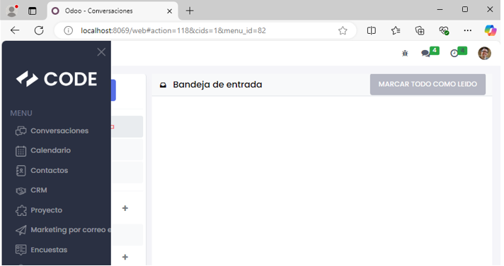

Cómo añadir un módulo en Odoo
Sigue estos pasos para añadir un módulo en tu sistema:
1. En la parte superior izquierda haremos clic y en el desplegable haremos clic en Ajustes.
2. Bajaremos abajo del todo y activaremos la opción "Activar modo de desarrollador (con activos)".
3. Nos iremos a la página web de Odoo para descargar un módulo, en nuestro caso será un tema para facilitar la navegación por el ERP.
4. Meteremos la carpeta descomprimida en la ruta que vemos en la captura.
5. El siguiente paso será entrar en nuestra web, ir a aplicaciones y dar varias veces a actualizar lista de aplicaciones.
6. Tras darle varias veces, pondremos en el buscador el nombre o una palabra que contenga el nombre de nuestro módulo.
7. Una vez lo activemos, podremos ver ya los cambios en nuestra web.
